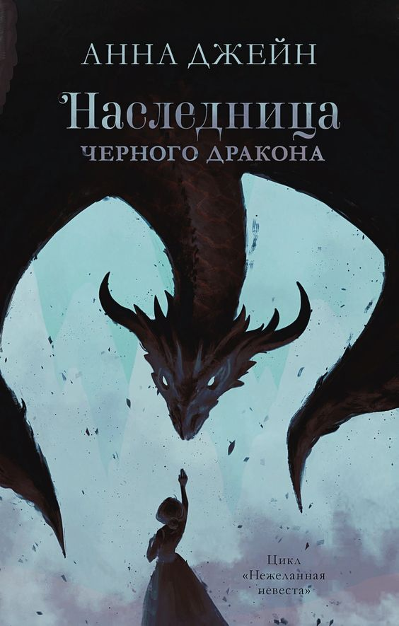

Наследница черного дракона
Открыть
Тайна пурпурного тумана
«Тайна пурпурного тумана. Пророчество» — книга автора Янь Цзин. Сюжет: Чэн Ю, только что получивший степень магистра психологии, пришёл в среднюю школу Наныиань, чтобы работать психотерапевтом. Там он познакомился с Лин, школьницей, которая живёт в тени своего отца, профессора психологии, всегда требующего, чтобы та всё делала на отлично. Лин была очень подавлена и особым образом послала сигнал бедствия Чэн Ю. Он помогает Лин разобраться со всеми проблемами. Теперь Лин — его помощница. С тех пор они столкнулись со многими странными и волнующими событиями, за которыми стоят ученики, нуждающиеся в помощи, и души, ожидающие искупления.
1800 p.
В карзину